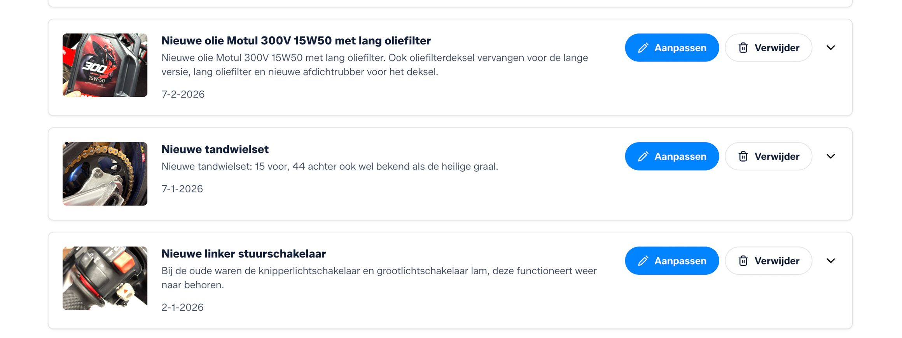

Motor onderhoud app gebruiken?
Alles van je motor op één plek
- Altijd inzicht in onderhoud
- Complete historie per motor
- Nooit meer iets vergeten
Een motor onderhoud app geeft je overzicht, rust en controle.
In plaats van losse notities, bonnetjes of spreadsheets, heb je alles op één centrale plek.
Van onderhoud en reparaties tot kosten en kilometerstanden.
Zo weet je altijd precies wat er met je motor is gebeurd en wat eraan komt.
Waarom een motor onderhoud app beter werkt
Alles op één plek
Direct overzicht
Altijd toegankelijk
Onderhoud herinneringen
Kosten inzichtelijk
Speciaal voor motoren
Je motor verdient meer dan losse lijstjes.
Onderhoud is niet alleen iets wat je afvinkt. Het is een verhaal van wat je hebt gedaan, wat je hebt vervangen en hoe je motor zich ontwikkelt. Met een motor onderhoud app bouw je automatisch die complete historie op.

Wat kun je bijhouden in een motor onderhoud app
Kilometerstanden
Onderhoudsbeurten
Reparaties
Onderdelen en upgrades
Kosten per onderhoud
Foto’s en facturen
Van Excel naar een echte oplossing.
Veel motorrijders beginnen met motor onderhoud in Excel of proberen hun motor onderhoud bij te houden met losse notities.
Maar zodra je meer data hebt, meerdere onderhoudsmomenten en kosten wilt bijhouden, wordt dat al snel onoverzichtelijk.
Een motor onderhoud app neemt dat werk uit handen en geeft je direct structuur.


Meer inzicht. Meer controle.
Of je nu zelf sleutelt of onderhoud laat doen: met een motor onderhoud app weet je precies waar je staat. En dat betekent minder verrassingen, betere planning en een motor die altijd in topconditie is.
Veelgestelde vragen
Wat is een motor onderhoud app?
Een app waarin je onderhoud, reparaties, kosten en historie van je motor bijhoudt.
Is een app beter dan Excel?
Ja, een app geeft structuur, overzicht en is altijd toegankelijk, terwijl Excel snel onoverzichtelijk wordt.
Kan ik meerdere motoren bijhouden?
Ja, je kunt eenvoudig meerdere voertuigen beheren binnen één account.
Is GarageBook gratis?
Ja, je kunt gratis starten en direct je eerste motor toevoegen.